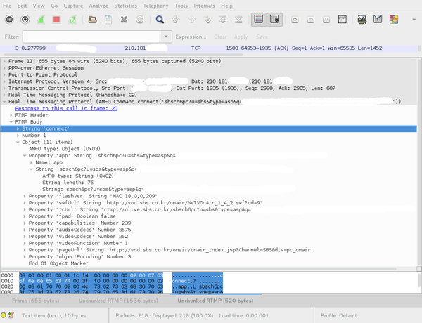

SBS and KBS are Korean TV networks and they provide TV streaming, but they are using fancy flash players (hello 100% used CPU) and SBS even asks a passport for foreigners to get access to the streams. Koreans can have access after being authentified to their services.
As I have a personal fight to provide access to K-POP for EVERYBODY and because I have to travel to different countries, I've prepared this article that will explain how to watch SBS, KBS1 and KBS2 without authentication.
The RTMP streams are protected using tokens.
A working RTMP request, with the one-time-token: 
By sniffing the traffic and decompiling the SWFs file, I discovered how to easily generate tokens:
The SWF in SBS website forces the browser to get a token by connecting to API (SBS). The SWFs in KBS* websites get the token directly in the webpage.
Sending this wget request will provide you the valid secure token:
wget -qO- --user-agent='YOUR_USER_AGENT' \
'http://api.sbs.co.kr/vod/_v1/Onair_Media_Auth.jsp?playerType=flash&channelPath=sbsch6pc&streamName=sbs1ch63.stream' | sed -e 's/\(.*\)q=\(.*\)/\2/'
TOKENTOKENTOKENTOKENTOKENTOKENTOKENTOKENTO%3D%3D
This script will allows you to watch SBS:
#!/bin/sh
token=$(wget -qO- --user-agent='YOUR_USER_AGENT' \
'http://api.sbs.co.kr/vod/_v1/Onair_Media_Auth.jsp?playerType=flash&channelPath=sbsch6pc&streamName=sbs1ch63.stream' | sed -e 's/\(.*\)q=\(.*\)/\2/')
rtmpdump --resume -r "rtmp://nlive.sbs.co.kr/sbsch6pc/sbs1ch63.stream?u=sbs&type=asp&q=${token}" \
--app "sbsch6pc?u=sbs&type=asp&q=${token}" --flashVer 'MAC 18,0,0,209' \
-s 'http://vod.sbs.co.kr/onair/NeTVOnAir_1_4_2.swf?dd=9' \
-t "rtmp://nlive.sbs.co.kr/sbsch6pc?u=sbs&type=asp&q=${token}" \
-p 'http://vod.sbs.co.kr/onair/onair_index.jsp?Channem=SBS&div=pc_onair' \
-y "sbs1ch63.stream" | mplayer -
Sending this wget request will provide you the valid secure token:
wget -qO- --user-agent='YOUR_USER_AGENT' 'http://www.kbs.co.kr/player/player_playlist.php?ch=11' | awk '/movieListVstream/{ print $4 }' | sed -e 's/\["//;s/"\];//'
1tv_home.stream?id=2101&si=9&secure=TOKENTOKENTOKENTOKENTOKENTOKENTOKENTOKENTOKENTOKENTOKENTOKENTOKENTOKENTOKENTOKENTOKENTOKENTOKENTOKENTOKENTOKENTOKENTOKENTOKENTOKENTOKENTOKENTOKENTOKENTOKENTOKENTOKENTOKENTOKENTOKENTOKENTOKENTOKENTOKENTOKENTOKENTOKENTOKENTOKENTOKENTOKENTOKENTOKENTOKENTOKENTOKENTOKENTOKENTOKENTOKENTOKENTOKENTOKENTOKENTOKENTOKENTOKENTOKENTOKENTOKENTOKENTOKENTOKENTOKENTOKENTOKENTOKENTOKENTOKENTOKENTOKENTOKENTOKENTOKENTOKENT==&csu=false
Now using this token is easy. This script will allows you to watch KBS1:
#!/bin/sh
token=$(wget -qO- --user-agent='YOUR_USER_AGENT' 'http://www.kbs.co.kr/player/player_playlist.php?ch=11' | awk '/movieListVstream/{ print $4 }' | sed -e 's/\["//;s/"\];//')
rtmpdump --resume -r "rtmp://live2.kbs.gscdn.com/1tv_home/_definst_/${token}" \
--flashVer 'MAC 18,0,0,209' | mplayer -
Sending this wget request will provide you the valid secure token:
wget -qO- --user-agent='YOUR_USER_AGENT' 'http://www.kbs.co.kr/player/player_playlist.php?ch=11' | awk '/movieListVstream/{ print $4 }' | sed -e 's/\["//;s/"\];//'
1tv_home.stream?id=2101&si=9&secure=TOKENTOKENTOKENTOKENTOKENTOKENTOKENTOKENTOKENTOKENTOKENTOKENTOKENTOKENTOKENTOKENTOKENTOKENTOKENTOKENTOKENTOKENTOKENTOKENTOKENTOKENTOKENTOKENTOKENTOKENTOKENTOKENTOKENTOKENTOKENTOKENTOKENTOKENTOKENTOKENTOKENTOKENTOKENTOKENTOKENTOKENTOKENTOKENTOKENTOKENTOKENTOKENTOKENTOKENTOKENTOKENTOKENTOKENTOKENTOKENTOKENTOKENTOKENTOKENTOKENTOKENTOKENTOKENTOKENTOKENTOKENTOKENTOKENTOKENTOKENTOKENTOKENTOKENTOKENTOKENTOKENT==&csu=false
Now using this token is easy. This script will allows you to watch KBS2:
#!/bin/sh
token=$(wget -qO- --user-agent='YOUR_USER_AGENT' 'http://www.kbs.co.kr/player/player_playlist.php?ch=11' | awk '/movieListVstream/{ print $4 }' | sed -e 's/\["//;s/"\];//')
rtmpdump --resume -r "rtmp://live2.kbs.gscdn.com/2tv_home/_definst_/${token}" \
--flashVer 'MAC 18,0,0,209' | mplayer -
Now, Enjoy K-POP while finding 0days ~~~~~~~~~~~~
published on 2015-08-10 00:00:00 by Pierre Kim <pierre.kim.sec@gmail.com>